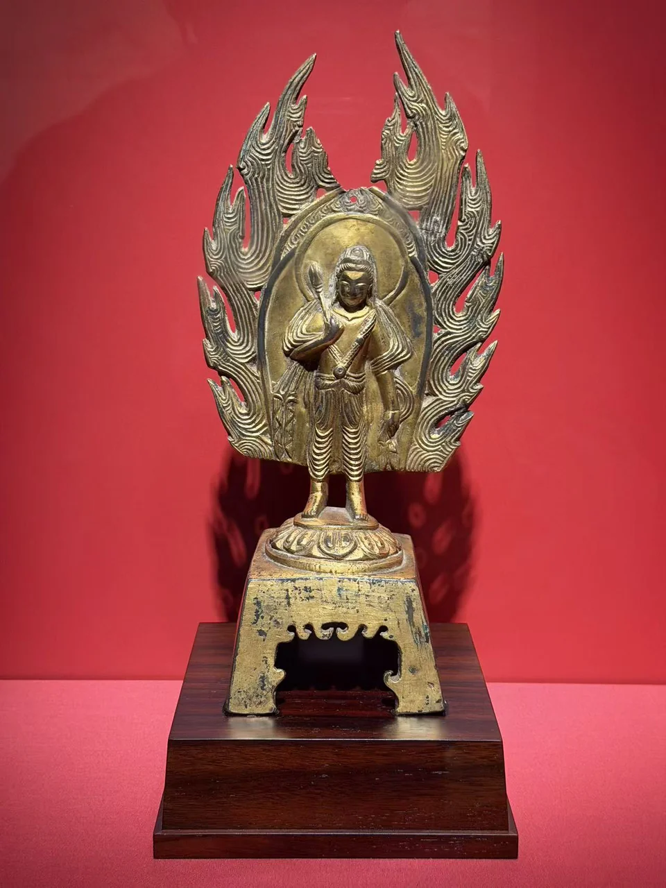
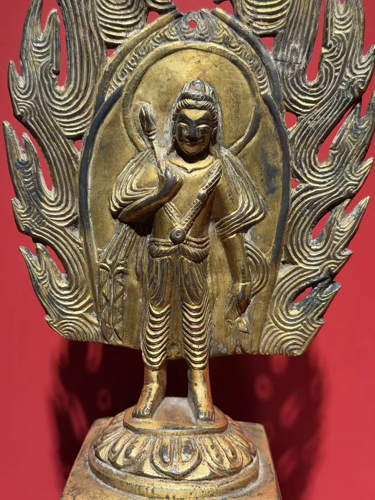
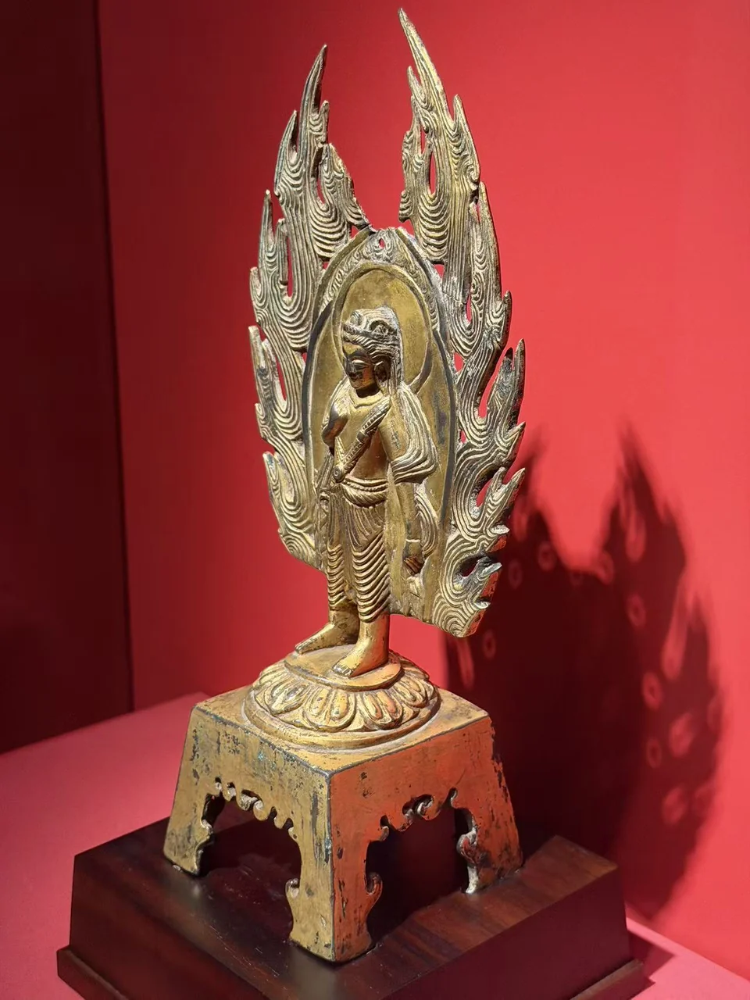
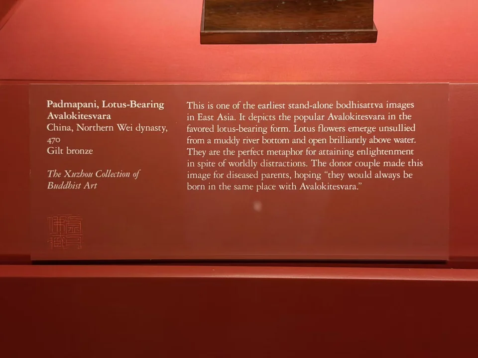

THE XUZHOU COLLECTION
持莲观音立像
Padmapani, Lotus-Bearing Avalokitesvara
莲花与透空火焰背光，一起向上延伸。

- 地区
- 中国
- 年代
- 北魏，470年
- 材料
- 鎏金青铜
- 收藏
- 虚舟收藏（私人收藏）
- 观看地点
- 休斯顿美术馆（MFAH）
作品札记
细长立像置于莲座上，右手抬近胸前，莲花在肩旁升起。身后的火焰轮廓很高，中间留出的空隙使红墙显露出来；衣纹则密集落在双腿前，与外圈火焰的起伏相互衬托。
馆方题名为持莲观音，将其断为北魏470年。展签提到一对供养者为父母祈愿，希望他们与观音同处。与旁边471年的佛立像相比，两件既接近于年代，也都保留了把个人愿望托付于造像的文字线索。
其他角度与细部




现场展签与原始记录

- 题名
- Padmapani, Lotus-Bearing Avalokitesvara
- 地区
- China
- 年代
- Northern Wei dynasty, 470
- 材料
- Gilt bronze